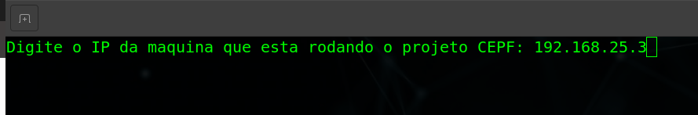

Introdução
Conforme detalhado na seção Arquitetura de Software, para execução da Plataforma de Conhecimento do Cerrado são necessárias 3 estruturas criadas e funcionais na máquina do usuário:
-
O Banco de Dados
lapigrestaurado no serviço do PostgreSQL devidamente instalado com a extensão PostGis. -
O serviço OWS Server devidamente configurado e executando em um IP e porta.
-
O Application Server e client (Front-end) da aplicação compilados e executando.
Restaurando e disponibilizando o banco de dados lapig
Para restaurar o banco lapig no PostgreSQL, é necessário ter o serviço PostgreSQL executando na máquina do usuário. Para tal, pode-se utilizar o tutorial neste link para instalar e executar o PostgreSQL e o PGAdmin3.
Ao final do tutorial, deve-se verificar qual a versão do PostgreSQL instalado (ver: link) e também instalar a extensão do Postgis para a versão adequada de acordo com o tutorial deste link no Step 4: Install PostGIS on Ubuntu 20.04/18.04 / Debian 10.
Com o PostgreSQL e o PostGIS instalados, em seguida é necessário realizar o download do último backup disponibilizado no endereço e extraí-lo.
$ tar -xfv BKP_BANCO_DADOS_LAPIG.tar.gz
Em seguida, deve-se exportar a variável de senha do banco de dados configurada anteriormente.
$ export PGPASSWORD= <db_password>
Após exportação da senha, deve criar o banco de dados no serviço PostgreSQL. Este passo pode ser realizado por linha de comando ou com ajuda do PGAdmin3. Ambos os passos estão demonstrados abaixo.
$ psql -h <host_address> -U <db_user> -c "create database lapig;"
Após a criação do banco de dados, deve-se criar as extensões do PostGis e PlPGSql para uso das funções na aplicação.
$ psql -h <host_address> -U <db_user> -d lapig -c "create extension postgis;"
$ psql -h <host_address> -U <db_user> -d lapig -c "create extension plpgsql;"
Agora de fato pode-se restaurar o banco de dados baixado e extraído para a database lapig criada, o que pode ser alcançada através do comando.
$ pg_restore -U lapig -h <host_address> -v -j 24 --format=d -C -d lapig lapig.sql/
Deployment da aplicação Plataforma de Conhecimento do Cerrado
Para execução da Plataforma de Conhecimento do Cerrado é importante ressaltar que o Banco de Dados deve estar restaurado e acessível conforme abordado na seção e também deve-se ter o OWS Server funcionando corretamente.
Conforme mencionado anteriormente, a estrutura do OWS Server foi construída com o apoio do Docker, portanto para instalação do mesmo, deve-se seguir os passos definidos nos tutoriais de acordo com o sistema operacional, seja ele Debian ou CentOS. Além do Docker, o script também faz uso das seguintes dependências:
A seguir será abordado duas maneiras de executar a aplicaçãa Plataforma de Conhecimento do Cerrado em ambientes de Desenvolvimento e Produção. Para o ambiente de desenvolvimento será detalhado um passo a passo partindo do pressuposto que um programador irá dar manutenção ou continuidade na Plataforma de Conhecimento do Cerrado. Já o ambiente de produção, será disponibilizado um script que executa todos os passos para disponibilizar a Plataforma de Conhecimento do Cerrado em uma porta da máquina que está sendo executado.
Em seguida, certifique-se de criar corretamente um arquivo .env conforme abordado na seção. Um exemplo de arquivo .env criado durante o processo de execução do script para o ambiente de Produção pode ser observado abaixo:
APP_PRODUCAO='/data/dados-lapig/dpat-files'
APP_PRODUCAO_CEPF='/data/dados-lapig/cepf-files'
CLIENT_DIR='/../client/dist/lapig-cepf-cerrado/'
LANG_DIR='/lang'
LOG_DIR='/log/'
TMP='/tmp/'
FIELD_DATA_DIR='/media/campo/'
UPLOAD_DATA_DIR='/uploads/'
DOWNLOAD_DIR='/data/dados-lapig/download_atlas/'
DOWNLOAD_DATA_DIR='/downloads-cepf/'
PG_USER='db_user'
PG_HOST='127.0.0.1'
PG_DATABASE='lapig'
PG_PASSWORD='db_password'
PG_PORT='db_port'
PG_DEBUG=true
PORT=3000
OWS_HOST='http://172.18.0.8:5000'
OWS_DOMAINS='http://172.18.0.8:5000'
Ambiente de Desenvolvimento
Assim como abordado na seção, a Plataforma de Conhecimento do Cerrado foi construído com NodeJS como Application Server e Angular como cliente (WebMap Client). Portanto, primeiramente é necessária a instalação destes componentes na máquina do desenvolvedor. Para tal, pode-se seguir o passo-a-passo elaborado neste link
Para execução da Plataforma de Conhecimento do Cerrado em ambiente de desenvolvimento, primeiramente é necessário realizar um fork do projeto para a sua conta pessoal do Github e em seguida executar um git clone do repositório do projeto.
Para inicializar o servidor de aplicação (Application Server) deve-se executar o passo-a-passo descrito na seção. A execução da mesma irá inicializar o Application Server em localhost na porta 3000.
Em seguida, para inicializar o WebMap Client localizado na pasta src/client, basta navegar até a pasta client e instalar as dependências listadas no package.json através do comando:
$ npm install
Após a devida instalação das dependências, pode-se então compilar e inicializar a aplicação. Mais uma vez, a fim de facilitar, foi criado um script start.sh para inicializar o WebMap Client, portanto basta executar:
$ ./src/client/start.sh
Ao finalizar a compilação do projeto, a aplicação estará executando em localhost na porta padrão do Angular, que é a porta 4200. Portanto, para acessar a página Web criada pela aplicação, acesse pelo navegador:
http://localhost:4200
Ambiente de Produção
Em seguida, uma segunda maneira de disponibilizar a Plataforma de Conhecimento do Cerrado é em ambiente de produção. É importante ressaltar que o OWS Server deve estar executando para que a Plataforma de Conhecimento do Cerrado faça as requisições de imagens das diferentes camadas utilizadas pelo sistema.
Para facilitar o processo de deployment em produção, foi criado um script que realiza todos os passos necessários para execução da Plataforma de Conhecimento do Cerrado em produção. Para executar o script basta executar em um Terminal:
$ ./start-cepf+ows.sh
Assim como detalhado na seção de Deployment do OWS Server, este script irá pedir ao usuário que informe os parâmetros endereço, nome, porta, usuário e senha do Banco de Dados, de forma a alterar corretamente o arquivo de configuração do ambiente, .env corretamente.
Em seguida, após pedir as informações do Banco de Dados, o script irá pedir ao usuário que informe o local onde a estrutura de pastas da Plataforma de Conhecimento do Cerrado deverá ser criada e também qual o endereço de IP da máquina de produção onde será realizado o deployment assim como informado nas imagens abaixo.



Basicamente o script deverá criar e ajustar automaticamente as variáveis de ambiente da Plataforma de Conhecimento do Cerrado, realizar o download e importação do contâiner docker onde todas as dependências do projeto já estão devidamente ajustadas e executar os passos necessários para compilar e disponibilizar a aplicação no endereço de IP informado na execução do script na porta 3000, assim como apresentado na imagem abaixo.
Após execução dos scripts o OWS Server estará executando na máquina do usuário na porta 5000 e a Plataforma de Conhecimento do Cerrado também na máquina do usuário na porta 3000.